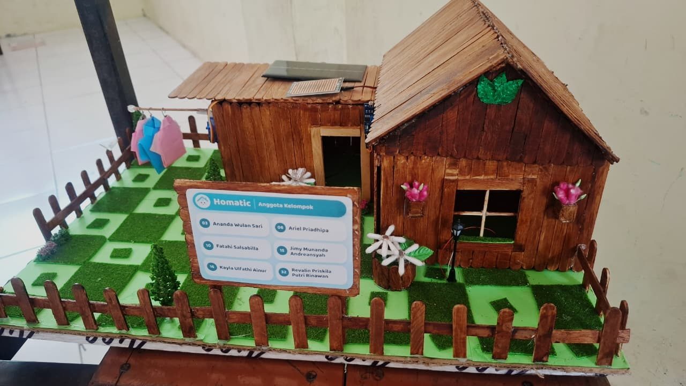
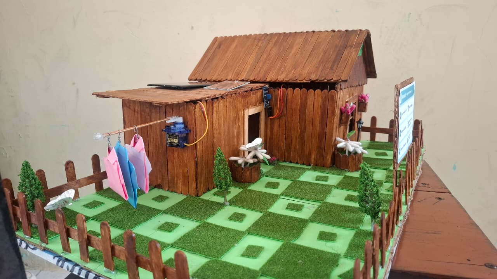

Bagian 8
Hasil Proyek 🏆
Miniatur Homatic


Hasil pengujian
Berdasarkan pengujian, sistem berfungsi sesuai rancangan: pada mode otomatis, jemuran keluar saat cerah dan masuk saat hujan atau gelap, sedangkan lampu menyala ketika kondisi gelap. Pada mode manual, lampu dan jemuran dapat dikendalikan dari jarak jauh melalui aplikasi Blynk.